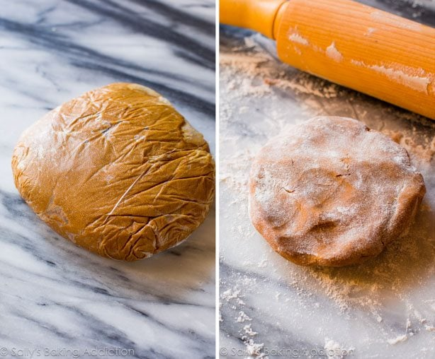
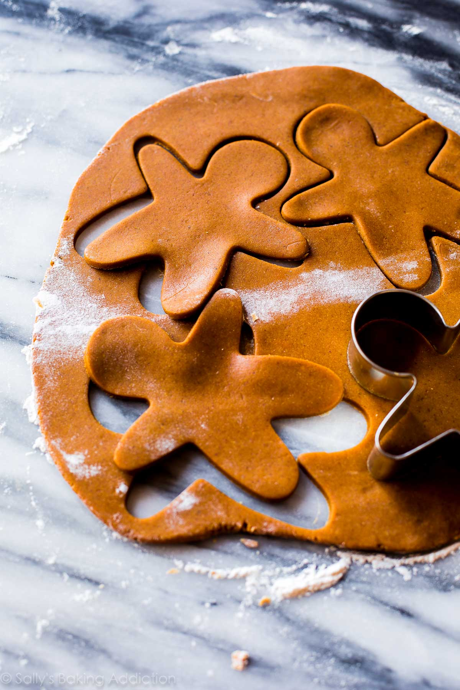

Here is my favorite gingerbread cookies recipe and one of the most popular Christmas cookie recipes.
Soft in the centers, crisp on the edges, perfectly spiced, molasses and brown sugar-sweetened holiday goodness.
Whenever I think of Christmas cookies, gingerbread cookies come to mind first.
Well, after Christmas sugar cookies of course! Their spice, their molasses flavor,
SMILES, and their charm are obviously irresistible.
Gingerbread cookies, you have my heart.
Key Ingredients in Gingerbread Cookies
The full written recipe is below, but let’s review a few key ingredients here first.
Gingerbread cookie recipes all start the same and mine comes from my mom.
To her recipe, I add a little more molasses and increase the amount of spice flavors (cinnamon, ginger, cloves, and allspice).
Because of the added sticky sweetener (molasses), I add a little more flour to help soak it all up.
Just like when we are making pinwheel cookies, a bit of extra flour helps the cookies can keep their shape.

Let’s walk through the gingerbread cookie recipe so you feel confident when you begin baking.
Chill the dough: The dough is sticky once it’s all beaten together in your mixing bowl and therefore,
it absolutely MUST be chilled for at least 3 hours. Give yourself enough time in the kitchen or make the cookie dough and chill it overnight.
You want your cookie dough firm so the cookies hold their shape and you want your cookie dough manageable so you can work with it.
You won’t have either unless you have chilled cookie dough!
Wrap up the dough: It’s easiest to wrap the dough in plastic wrap before chilling. Scoop out 1/2 of the prepared cookie dough,
plop it onto a long sheet of plastic wrap, wrap it up, and flatten it out into a disc. Repeat with the other 1/2 of dough.
Then chill. See that photo above? That’s what you’re doing, but you’ll have 2 discs. Why are you doing this?
It’s easier to roll out the chilled cookie dough when it is in a disc shape. Also, the cookie dough chills faster when there is less volume.
And it’s just easier to work with smaller portions when rolling/shaping!
Roll it out: After chilling, roll out the chilled cookie dough discs until about 1/4-inch thick. Don’t be afraid to flour your hands,
rolling pin, work surface, and everything in the world. By that, I mean: the cookie dough can become sticky as you work.
So, don’t be scared to add more flour to the work surface. The flour spots on top of your shaped cookie dough will bake off.

Place the cut-out cookies onto a lined baking sheet about 1 inch apart.
The cookies won’t really spread, but you want to make sure they have enough room to breathe. They are gingerbread people, after all. 😉
After they’ve baked and cooled, it’s time to decorate the cookies. We’re talking smiles, eyes, bow-ties, buttons, squiggles,
whatever your gingerbread cookie loving heart desires. This is when it’s really fun to have a friend or little baker in the kitchen with you.
You can use the easy cookie icing or my traditional royal icing recipe, whichever you prefer.
For something even easier, you can decorate the gingerbread cookies with cookie decorating buttercream, and feel free
to add a little cinnamon to it for extra spice flavor.
Tint the icing with a couple drops of food coloring to spice things up, too.
Many of the tools I include in my list of favorite cookie decorating supplies will be helpful for decorating these cookies.
For more inspiration, here is my full tutorial on
how to decorate sugar cookies" (video included!).
It’s difficult not to love this recipe which is why they’re my favorite gingerbread cookies!
This is my favorite gingerbread cookies recipe and it’s also loved by millions.
Soft in the centers, crisp on the edges, and perfectly spiced.
I played around with the spices a lot and really loved the flavor of these cookies
when using a full Tablespoon each of ground ginger and ground cinnamon.
Make sure you chill the cookie dough discs for a minimum of 3 hours.